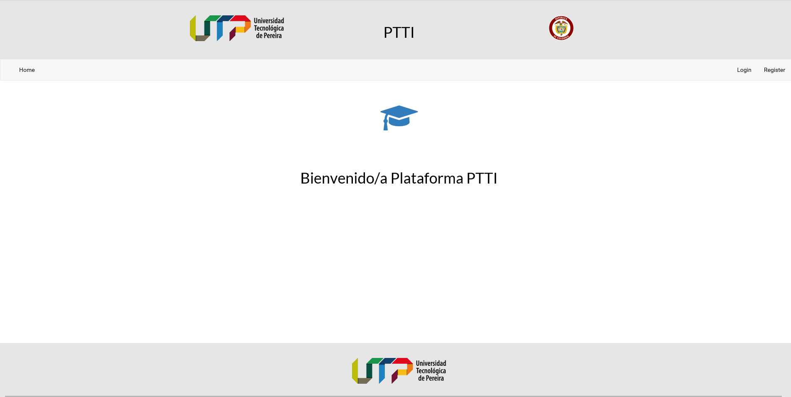

Johan Camilo Quiroga Granda - Full Stack Developer.
Desarrollador web Full Stack con conocimientos en diferentes tecnologías web como Laravel/Node.js y Vue.js/React.js. Orientado a objetivos, proactivo, receptivo y excelente para encontrar soluciones a problemas difíciles. Ingeniero de sistemas y computación con una amplia experiencia en desarrollo ágil de aplicaciones web.
Mejores experiencias

Cliente para Hackernews
Un pequeño cliente de noticias publicadas en la plataforma Hackernews construido puramente con React.js. Este es mi primer proyecto utilizando dicha tecnoglogía (siguiendo este increíble libro) y la cual espero ir mejorando cada vez más.

Aplicación de administración de tareas
Una pequeña aplicación para administrar tareas construida con Vue.js y distintas herramientas de su ecosistema (vue-router y vuex) y la cual espero ir mejorando a medida que aprenda cosas nuevas.
Hice parte del equipo de trabajo de Terra Quimbaya
Plataforma que promueve la sustentabilidad y el desarrollo de la economía local a través de la comercialización de productos de la biodiversidad de alto valor agregado.
Terra Quimbaya App
Esta es la aplicación móvil complementaria a la plataforma web Terra Quimbaya. Este desarrollo es mi primer acercamiento al desarrollo de aplicaciones móviles multiplataforma.
Gym Manager
El sistema GYM-Manager permite la administración de un gimnasio a partir del control de usuarios, de las rutinas físicas que deben realizar los clientes y de la evolución que estos tengan durante su permanencia en el gimnasio.

Proyecto Psychology Test TI
Esta es la primera aplicación web que desarrollé. Esta fue desarrollada para la materia Laboratorio de Software y a partir de esta experiencia fue que más me interese y adentré en el mundo del desarrollo web.